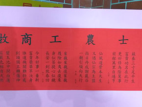
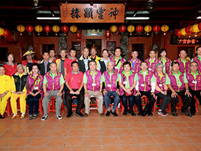
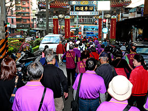
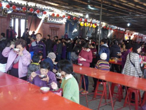
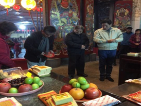
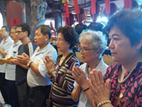
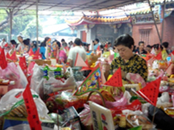
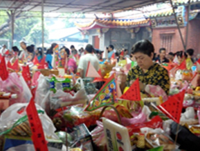

活動訊息
￭ 本巖鎮殿祖於106年12月28日起重新粉面，107年1月1日圓滿安座
￭ 粉面前鎮殿祖法像
￭ 粉面後鎮殿祖金面法像
￭ 106年12月31日第二屆顯應祖師聯誼會由深坑天龍宮(巖)主辦，各主祀顯應祖師友(宮)巖主委、 幹部踴躍出席，歡喜相聚，共同籌劃發揚金面顯應祖師濟世精神
￭ 106年12月25日董監事率花鼓陣奉祖師三度參加在佛陀紀念館舉行的2017世界神明聯誼會。祖 師駐駕大佛平台，俯瞰各式陣頭表演；花鼓陣受邀菩提廣場盛大演出(實況影音分享)，並獲頒「 忠義傳家」金牌殊榮

￭ 106年12月24日祖師駐駕虎尾持法媽祖宮
￭ 106年12月24日祖師三度駐駕永定后儀宮，花鼓陣再次舞動小鎮
￭ 106年12月24日董監事、花鼓陣奉祖師三度駐駕內門順賢宮
￭ 106年11月6日新北市朱立倫市長蒞臨上香祝壽祈福
￭ 花獅、花鼓陣拜廟，禮敬祖師恭祝聖誕千秋
￭ 感謝里長們熱誠參與、協助遶境
￭ 爐主、頭家歡喜遶境換香
￭ 董事長擲筊107年爐主、頭家
￭ 恭喜李國瑞大德立筊拔籌107年爐主
￭ 禮斗壇場莊嚴殊勝，誦經功德普皆回向
￭ 106年9月2~4日 (農曆7月12~14日)106年中元消災植福薦拔盂蘭盆法會
￭ 法師引領大眾全巖內外灑淨，召請被超薦之生靈來到壇場聽經聞法
￭ 大眾至誠恭誦地藏經，祈福消災及超薦祖先、亡靈、嬰靈、冤親債主、地基主等生靈
￭ 施放大蒙山普施六道群靈
￭ 大甘露施食，信眾踴躍贊普，普施六道，物資轉贈公益團體，冥陽兩利
￭ 106年5月20日 106年第14屆第1次信徒代表大會
￭ 信徒代表齊聚大合照
￭ 張仁甫顧問精彩專題報告--頂泰山巖的特色 介紹
￭ 106年5月18日 同榮附幼師生、家長60餘人，由泰山文史協會老師分二組導覽，瞭解古蹟、信仰 從小紮根
￭ 106年5月17日 義學國中楊校長帶領畢業班同學蒞巖參拜文昌帝君，祈求考運亨通、金榜題名
￭ 供品-蘋果、乖乖(平順)、蔥蒜(聰明、精算)、筍(順利、高昇)、包子、粽子(包中)
￭ 106年5月14日 歡迎大坪林泰山巖劉主委帶領信眾250餘人蒞巖參香
￭ 106年5月3日 (農曆4月8日)浴佛節(佛誕節) 香湯浴佛，淨佛身、離垢染、增福慧

￭ 106年3月31日 歡迎市定古蹟-淡水福佑宮主委、幹部蒞巖交流分享古蹟修復經驗
￭ 106年3月14日 台南市長賴清德蒞巖參拜感恩顯應祖師恩澤~本巖於105年2月捐助台南地震善款 100萬元
￭ 賴清德市長以三獻禮叩謝顯應謝祖師恩澤
￭ 賴市長致謝詞~感念本巖愛心賑災
￭ 賴市長巖前與本巖董監事合影
￭ 賴市長與董事長林志峰合影
￭ 106年2月25日歡迎南港六合祖40餘人蒞巖參香
￭ 106年2月18日汐止福山巖160餘人蒞巖參香，花鼓陣熱烈迎賓，友巖交流，人神同喜相見歡
￭ 106年2月12日五股龍鳳巖200餘人蒞巖參香，祖師座前誦讀參香疏文，本巖佳餚迎賓

￭ 106年新春祈安禮斗壇場莊嚴，師父點亮福壽斗米七星燈
￭ 106年新春祭解-師父為信眾祈福消災，並於所備衣服加蓋顯應祖師賜福平安圖記
￭ 106年新春點光明燈、安太歲、禮斗及享用平安麵盛況

￭ 除夕子時開巖門拜頭香，區長擲筊祈求國運籤，並與常務董事合影

￭ 105年12月29日覺道師父引領誦經團禮拜藥師寶懺
￭ 105年12月24日本巖正式授旗花鼓藝陣，並奉顯應祖師聖駕出發參加世界神明聯誼會。
￭ 105年12月24日顯應祖師參加世界神明聯誼會，沿途參訪西螺福興宮、永定后儀宮，並駐駕高 雄內門順賢宮

￭ 105年12月25日本巖顯應祖師在花鼓藝陣前導下，駐駕佛光山佛陀紀念館大佛平台參加世界神 明聯誼會，本巖花鼓藝陣並受邀精采演出
￭ 105年祭山靈法會並舉行揮毫贈春聯與大眾結緣
￭ 105年12月21日本巖林志峰董事長召集第一次顯應祖師聯誼會，與在台主祀顯應祖師各友巖交流聯誼
￭ 105年11月26日參訪六友巖
￭ 與友巖-汐止福山巖幹部合影
￭ 與友巖-深坑天龍宮幹部合影

￭ 奉祖師至友巖-大坪林泰山巖過火參香
￭ 與友巖-龜山顯安巖幹部合影
￭ 祖師在友巖-頂福巖過爐參香，友巖幹部、信眾叩首頂禮
￭ 至友巖-五股龍鳳巖參香留影
￭ 友巖參香一日行，董監事、信眾歡喜奉駕啟程，一路參訪七個友巖，圓滿回駕

￭ 105年11月5日參加明志書院先賢郭宗嘏入祀安座典禮，本巖贊助特刊出刊費以示慶賀
￭ 105年10月18日祖師聖誕祈安遶境
￭ 農曆9月18日 祖師祖聖誕~泰山劉淑芬區長及本巖林志峰董事長喜迎祥獅獻瑞
￭ 沿途信眾虔誠擺香案迎老祖、換香祈平安
￭ 左起李弘基常董、王祈函副董、盧淵源常董及遶境總指揮戴聯樹里長全程隨駕、盧淵源常董 奉老祖回巖

￭ 105年10月15日董事長與常董奉老祖出席新北市泰山獅王文化節
￭ 105年10月2日李氏七股會恭賀祖師聖誕~自今年起訂於每年農曆九月第一個星期日舉行
￭ 105年9月18日全國古蹟日新北市泰山文史協會老師來巖為貴賓座精彩絕倫的導覽
￭ 105年8月17日新北市朱立倫市長蒞臨禮敬老祖及參訪明志生態園區
￭ 105年8月16日中元盂蘭盆勝會~慎終追遠超薦祖先、普施法界一切有情
￭ 105 年 3 月 20~25 日參訪福建安溪祖巖進香謁祖
￭ 祖巖巖貌
￭ 祖巖大殿

￭ 祖巖大殿神龕供奉祖師法像
￭ 從山頂俯瞰祖巖巖門牌樓
￭ 林董事長率眾禮敬祖師，並恭讀謁祖疏文
￭ 一行人與祖巖人員於祖巖巖前合影留念
￭ 105年新春祈安禮斗
￭ 新春祈安禮斗莊巖壇場
￭ 義工團隊精心備辦的齋天供品
￭ 董事長率董監事新春禮斗祈福
￭ 董監事及值年爐主虔心參與延壽斗科科儀
￭ 義工菩薩充滿法喜的笑容
￭ 105年春節賀歲 平安麵與眾結緣
￭ 來巖信眾開心熱鬧享用平安麵

￭ 新春賀歲-金猴報喜 福猴迎春
￭ 歡歡喜喜打齋結緣
￭ 大眾點光明燈、安太歲
￭ 初一頭香 泰山區長蒞臨參香合影
￭ 立委李鴻鈞昆仲擲筊抽出丙申年國運籤

￭ 本巖顯應祖師聖示 105年歲次丙申 士、農、工、商、漁牧各業運勢
￭ 104年慶祝重建八十周年暨祭山靈及謝平安法會-105年1月2日(農曆11月23日)
￭ 依循古禮隆重致祭於山川靈神及齋天，祈願 護國佑民 斯土永享昇平
￭ 慶祝重建八十周年略記~永感李、連、邱、鄭、周等諸氏先賢功勳者，昔年慷慨捐輸之德
￭ 邀請陳章甫老師等書法名家於前埕揮毫贈春聯，民眾歡喜排隊索取
￭ 2015年農曆9月18日 祖師聖誕禮斗法會及祈 福遶境本巖董監事虔心合掌禮老祖賀壽祈福
￭ 新北市高宗正副市長蒞巖恭祝祖師聖誕千秋

￭ 祖師聖誕禮斗祈福
￭ 陣頭熱鬧遶境
￭ 本巖值年爐主歡喜遶境祈福
￭ 明志社區花鼓陣熱情參與祝壽祈福遶境
￭ 104年10月24日新北市泰山獅王節恭請顯應祖師駐駕會場觀禮
￭ 2015 七股會-李氏宗親齊聚一堂 恭祝顯應祖師104年聖誕千秋
￭ 2015中元盂蘭盆勝會 普施迴向
 
￭ 104.5.23隆重舉行彩繪竣工典禮及104年度信徒代表大會。由30位天女以十供養儀式獻供
￭李董事長等董監事及彩繪大師劉家正代表獻供
￭泰山區黃區長秀川及貴賓偕同揭綵
￭義學國中祥獅獻瑞、同榮國小吉(擊)鼓報喜為彩繪竣工典禮揭開序幕，增添熱鬧
￭104.5.23汐止雲山巖以熱鬧陣頭來巖參香，同時為本巖彩繪竣工典禮添色增輝
￭104.5.22慶祝全巖彩繪竣工，禮請上惟下悟法師引領全巖灑淨，舉行齋天法會